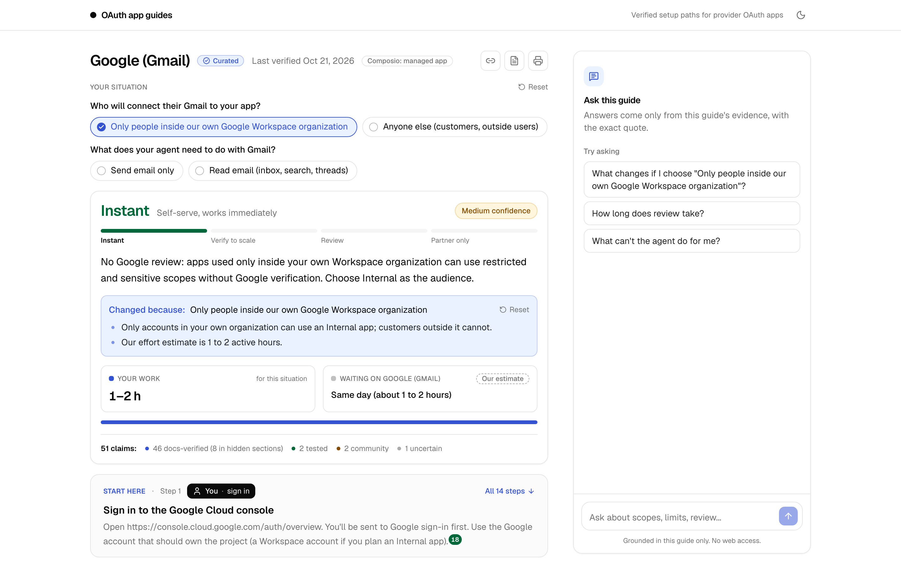
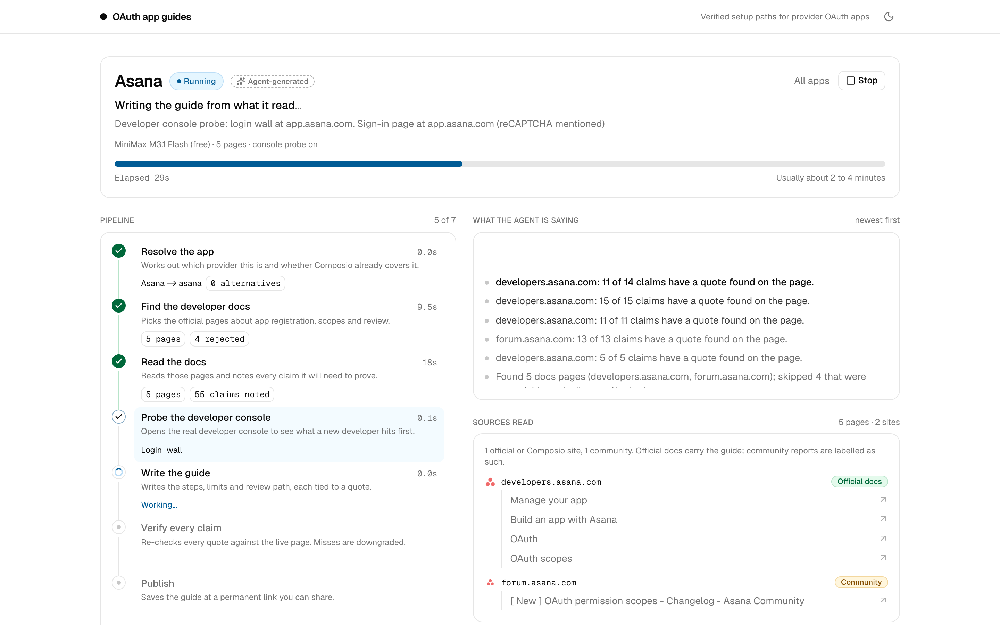
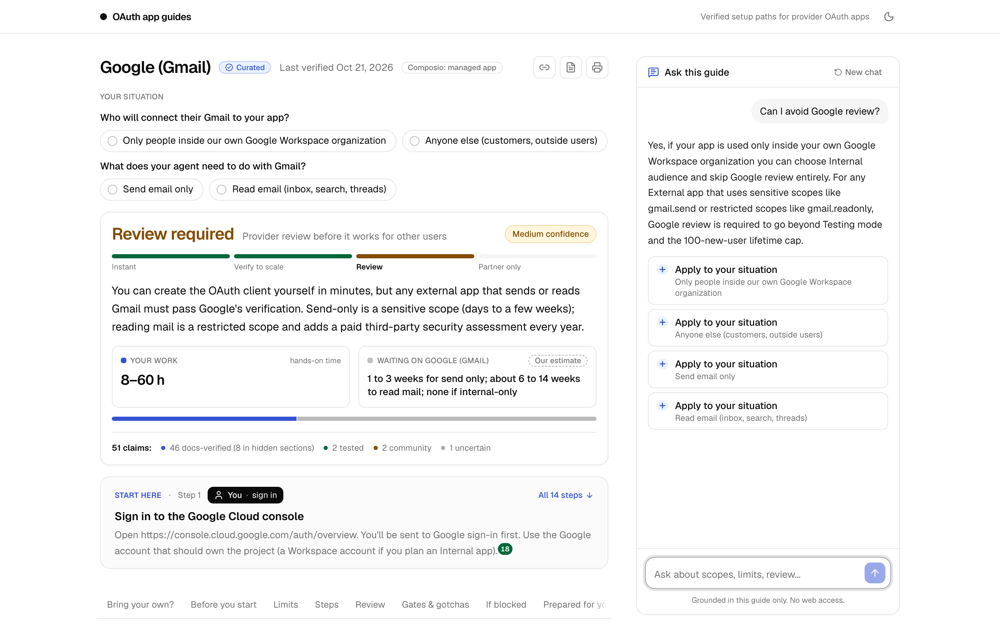
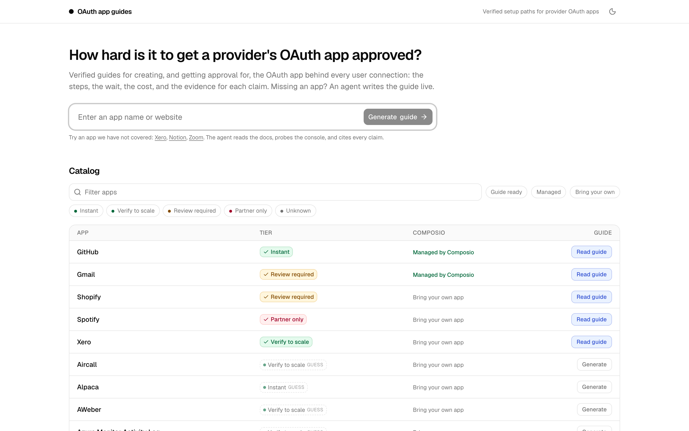
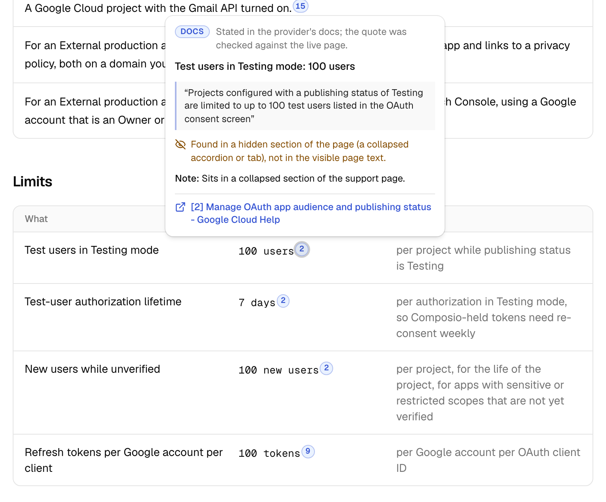
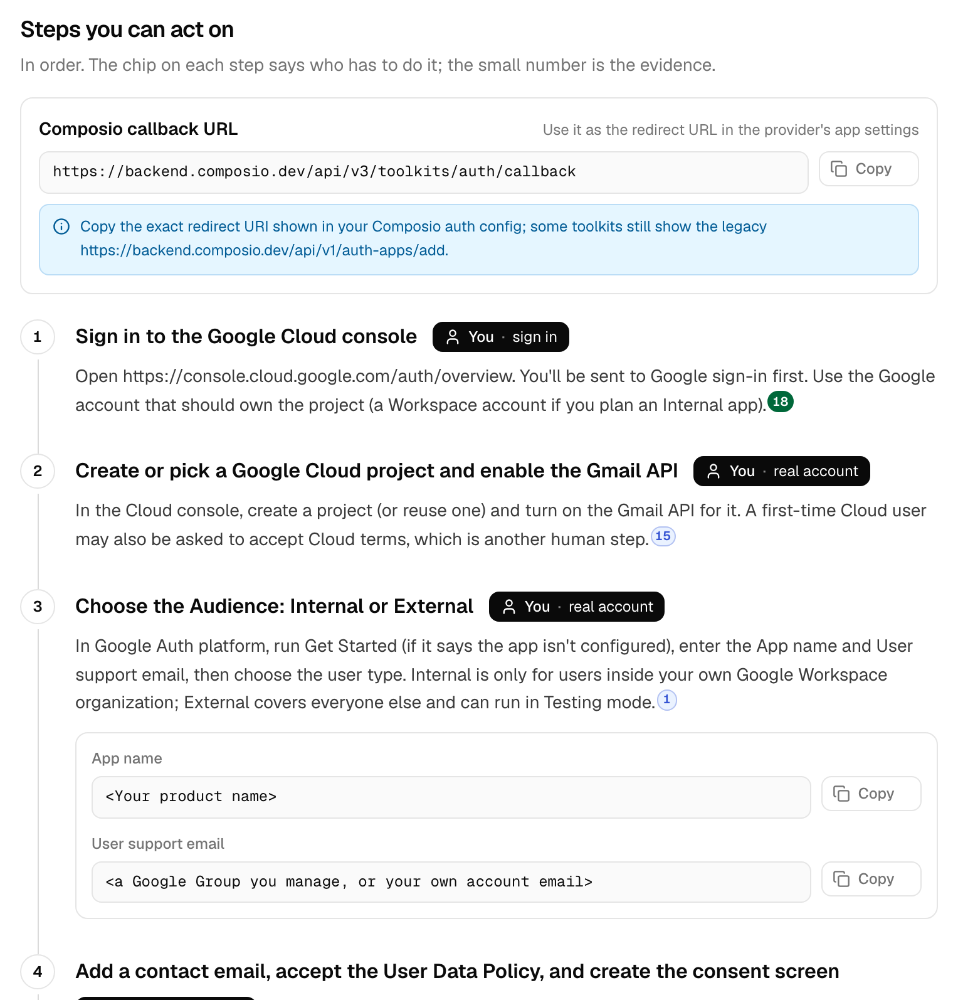

OAuth lets a user grant an app limited, revocable access without sharing their password. But before any user can click "Allow", the developer needs an approved OAuth app at the provider.
The developer's client registration at Google, Xero or Shopify: client ID and secret, redirect URI, scopes, consent screen. Often needs the provider's approval.
Which OAuth app and scopes to use for a toolkit. Composio's own managed app (123 toolkits) or the developer's own (required for 211).
One per end user, holding that user's tokens. One OAuth app serves thousands of them, so if layer 1 isn't approved, nobody can connect.
The same app can be easy or hard depending on the permissions requested. For Gmail, internal-only apps need no review, sending email is a sensitive scope (a review lasting days), and reading email is a restricted scope (review plus a paid yearly security assessment). A good guide shows what each permission costs.
Passing the provider's review isn't the end. Customers' own admins can still block an app: Microsoft tenants often need admin consent, GitHub organizations restrict OAuth apps by default, and Slack workspaces can require approved apps. Guides cover both sides.
When an AI agent connects to a user's Gmail, Xero or Shopify, it does so through a provider OAuth app: a client registration the developer creates at the provider.
Composio supplies a managed app for 123 toolkits. For the other 211, and whenever a developer wants their own branding, rate limits or scopes, they must register their own app and often get it approved.
Setup can take five minutes (GitHub) or weeks with a paid security audit (reading Gmail). Sometimes only established companies are accepted (Spotify). Nobody can tell in advance which it'll be.
Asked from memory, a model was wrong on several of these points: Spotify's user cap, GitHub's token default, which tier each app falls in. Providers changed their rules several times in 2026, and their own docs sometimes contradict each other.
So the product is a research-and-verification process. The guide is its output.
Everything below works at oauth-guides-web.vercel.app. No sign-in needed.
Open the Gmail guide. Choose "Only people inside our own Google Workspace" and the verdict changes from Review required to Instant. Choose outside users who need to read email, and it becomes review plus a paid security assessment.

Type "Can I avoid Google review?". The answer uses only this guide's verified evidence, with citations, and an Apply button sets your situation for you.
On the home page, type something like Zoom, Dropbox or Asana. You'll watch the agent find the provider's official docs, probe its developer console, write the guide and re-check every quote on the live pages. It takes about a minute.
Progress streams as the agent works, and the result is a shareable guide with a permanent link and Markdown export.



Guides are built to act on: copy the exact values, know which steps are yours, and check any claim yourself.


Each new app goes through a seven-stage pipeline. Everything that can be deterministic is plain code. Free LLMs do only two narrow jobs, and their output is checked against a schema.
Each ask from the assignment, and where the answer is in the product or the repo.
| The brief asks | Where it's answered |
|---|---|
| How easy or difficult it is to get the OAuth app ready | A verdict with one of four tiers on a difficulty ladder, with confidence. It re-renders when you change "Your situation". |
| Time and effort, including the approval wait | "Your work" and "Waiting on the provider" shown separately; official vs. community-reported waits; cost. |
| Requirements and nuances | Before you start, limits (value, unit, scope), customer-side gates, gotchas, and conflicts where the provider's own docs disagree. |
| What the agent can do, and where you take over | Every step is marked You (with the reason), Agent or Either. "Prepared for you" holds drafted scopes and consent-screen values. |
| Use agents to investigate and attempt setup | The live pipeline runs for every new app. The setup-attempt experiment shaped the design. |
| Be clear about what was tested, sourced or uncertain | Four evidence labels, an evidence summary on every guide, citation cards, and conflicts shown openly. |
| A library of guides; a few varied apps | 5 curated guides covering all four tiers (GitHub, Xero, Gmail, Shopify, Spotify), plus a 100-app catalog. |
| Generate a shareable guide live, for any app | Streamed progress, then a permanent link and Markdown export. Tested on six apps we never researched. |
| How to proceed when blocked | "When you're blocked" (symptom → cause → fix), plus Ask this guide. |
| Check a sample against sources; show corrections | The verification report: research re-check, setup experiment, 247 live quote checks, 3 eval rounds, performance and cost. |
Each one came from something we tested or measured, not from assumptions.
Answers from memory were wrong or stale, so checking against live docs is the product.
All 5 consoles stopped at sign-in. The agent probes, researches and drafts, then hands off.
Search, probing, quote checks, labels and tier rules are deterministic. Models extract claims and write, and their output is validated.
Even for Composio-managed apps, guides cover registering your own app, and say when the managed one is enough.
Runtime uses free OpenRouter models behind a server allow-list. Claude Code was used only to build and test.
5 varied apps done well, plus live generation for any app, instead of 100 shallow guides.
The live agent was scored against an answer key built from our verified research, then timed and costed.
| Eval round | Tier accuracy | Fallback drafts | Inflated labels | What we changed after |
|---|---|---|---|---|
| Round 1 | 1.5 / 3 | 1 | 0 | Split and time-boxed the writer; added tier rules; restricted to official domains |
| Round 2 | 2 / 3 | 0 | 0 | Instant tier when the docs show no review; filtered off-topic pages |
| Round 3 | 3 / 3 | 0 | 0 | Final version |
Each limitation in plain words, what it means for you, and what softens it today.
| Limitation | What it means for you | What helps today |
|---|---|---|
| Console forms are behind a login | We can't see the real sign-up forms, so exact field names and logo rules aren't verified. | Marked “check on first sign-in”. Everything else is checked against public docs. |
| Generated guide links can expire | A link to a guide you just generated may stop working after the server restarts. | The five curated guides are permanent. Use Export Markdown to keep a copy. |
| Some docs need a browser to load | Docs pages built with JavaScript can't be read on the live server, so those facts may show as Uncertain. | They work when run locally with a browser installed. |
| Free models can miss numbers | A generated guide may leave out a specific limit, such as Gmail's 100-user cap. | Curated guides include them. A paid model is an option (about $0.03 a guide). |
| Difficulty can read stricter than it is | If any common path needs review, the tier says “Review required”, even when the basic path doesn't. | The summary and the “Your situation” toggles explain the difference. |
| Generation takes about a minute | Free models are slower and rate-limited, up to 30 runs per person every 10 minutes. | Live progress is shown throughout. Finished guides load instantly. |
| Progress can occasionally go quiet | Twice in testing, live updates stopped while the server carried on. | The page now checks the run's status and loads the finished guide anyway. |
| Rules change | Providers changed their OAuth rules several times in 2026. | Every guide shows its “last verified” date. |
Options we identified while building, roughly in order of value. Several are already partly designed or prototyped in the repo.